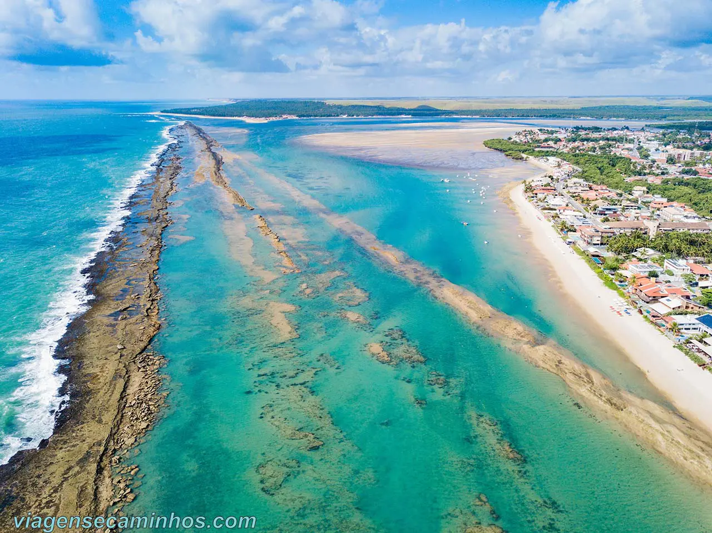
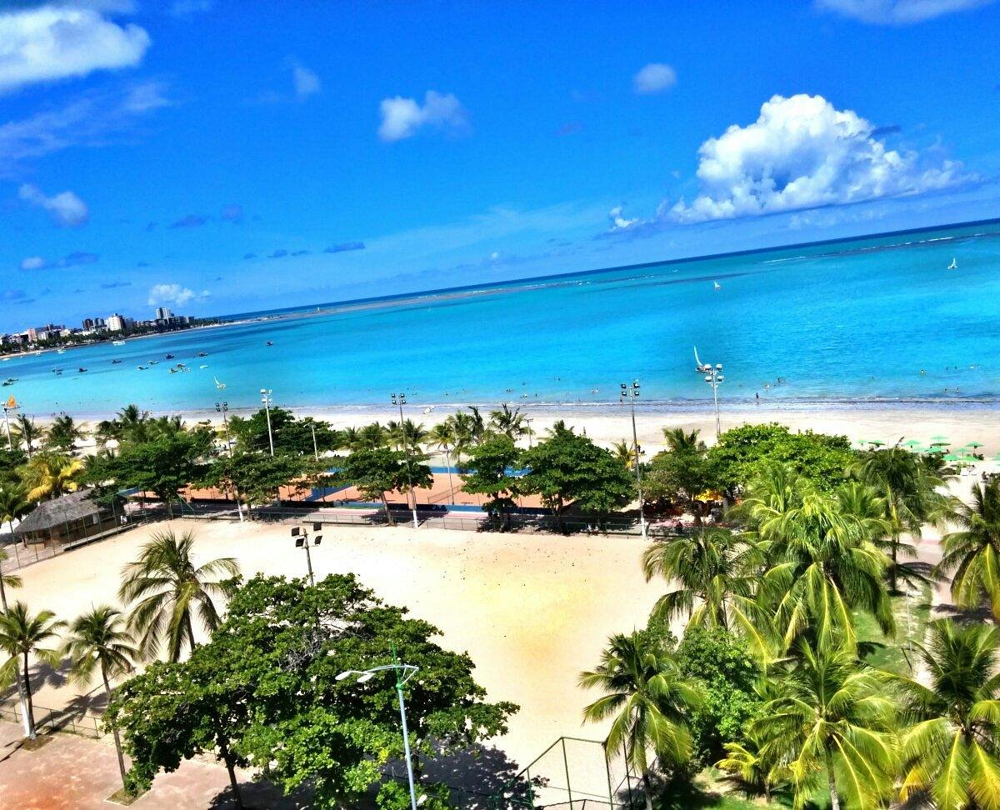
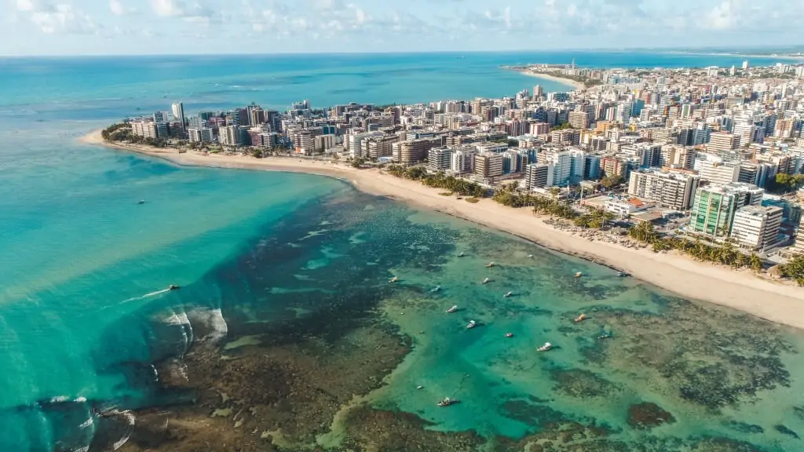

Maceió, capital de Alagoas, é um destino turístico encantador, especialmente conhecido por suas praias deslumbrantes e águas cristalinas.
A cidade oferece um verdadeiro paraíso para os amantes do mar, com opções para todos os gostos, desde as mais tranquilas até as mais agitadas.
As praias de Pajuçara, Ponta Verde e Ipioca são algumas das mais famosas, com águas de tons esverdeados e mornas, ideais para banhos e passeios de jangada.
Além disso, a Praia do Francês e a do Carro Quebrado são opções perfeitas para quem busca paisagens naturais intocadas e ótimas para o surf.
Maceió ainda conta com piscinas naturais e recifes de corais que encantam os turistas.
A cidade combina beleza, tranquilidade e infraestrutura de qualidade, sendo um destino imperdível para quem deseja explorar o litoral nordestino.
Pontos Turísticos
Barra de São Miguel

A cerca de 30km de Maceió, Barra de São Miguel é ideal para relaxar com sua água clarinha e protegida por corais.
Pajuçara

Famosa pelas piscinas naturais e jangadas, a Praia de Pajuçara é uma das mais visitadas de Maceió.
Ponta Verde

Com suas águas cristalinas, coqueiros à beira-mar e clima acolhedor, Ponta Verde é o cenário perfeito para quem busca beleza natural e tranquilidade em Maceió.